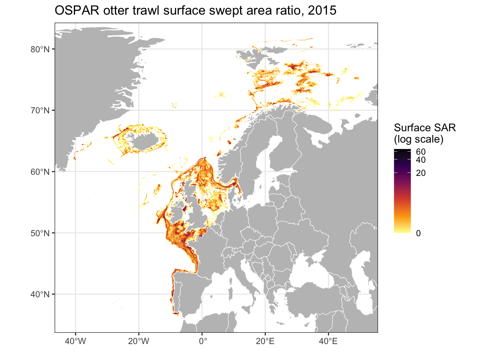
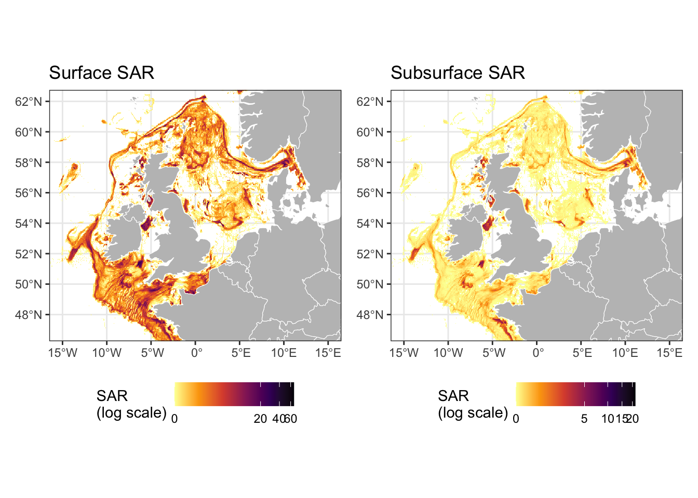
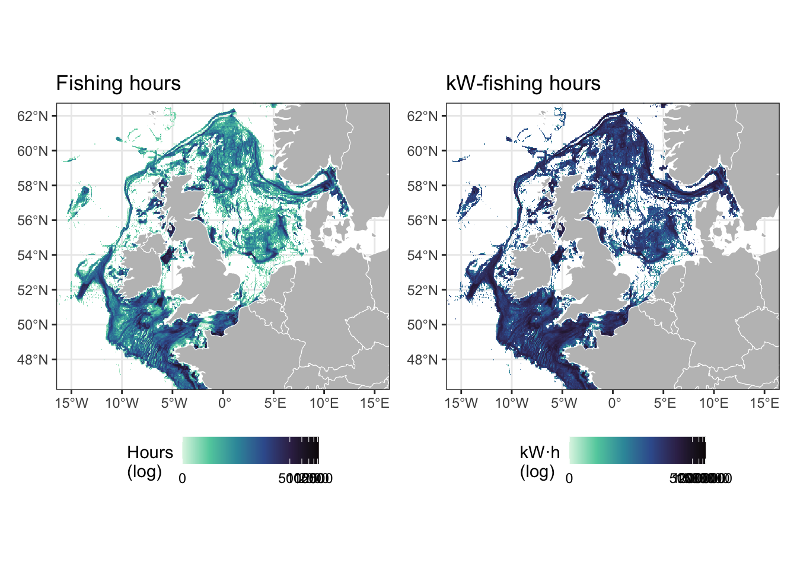
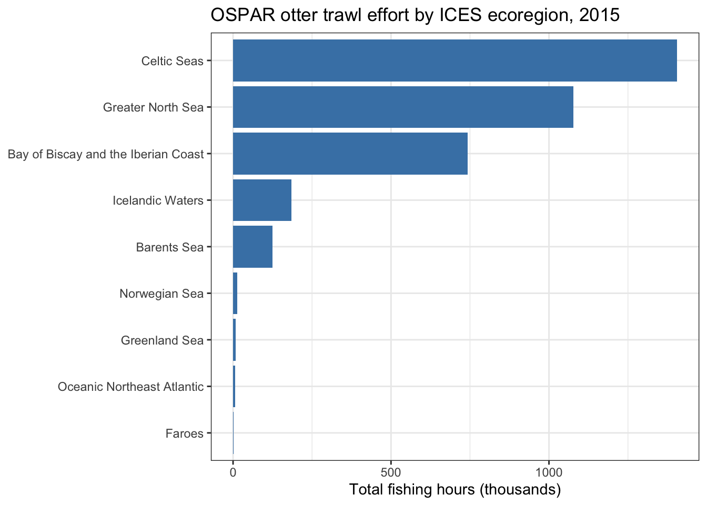
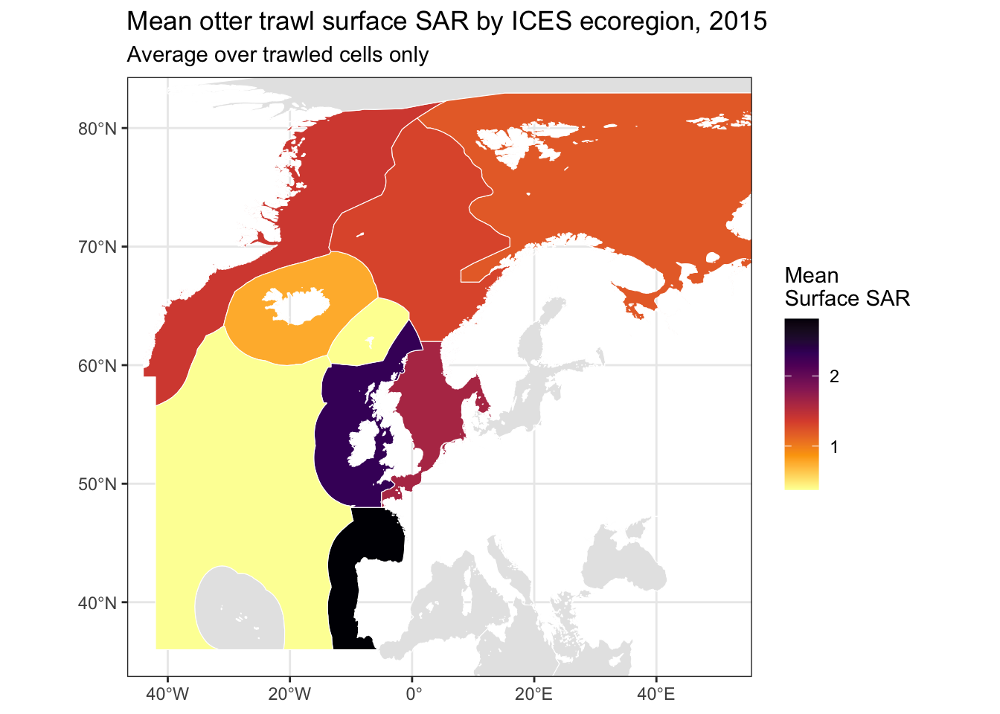
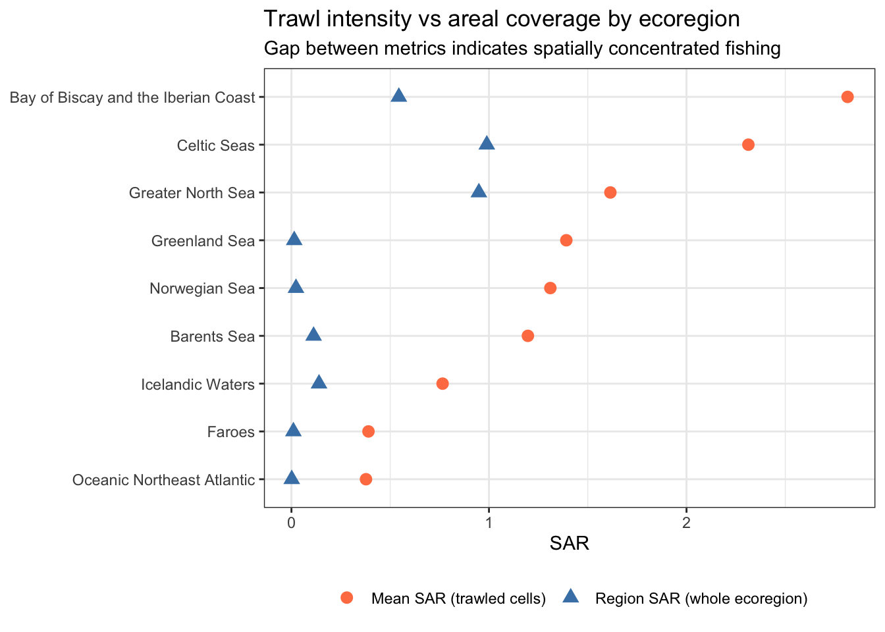
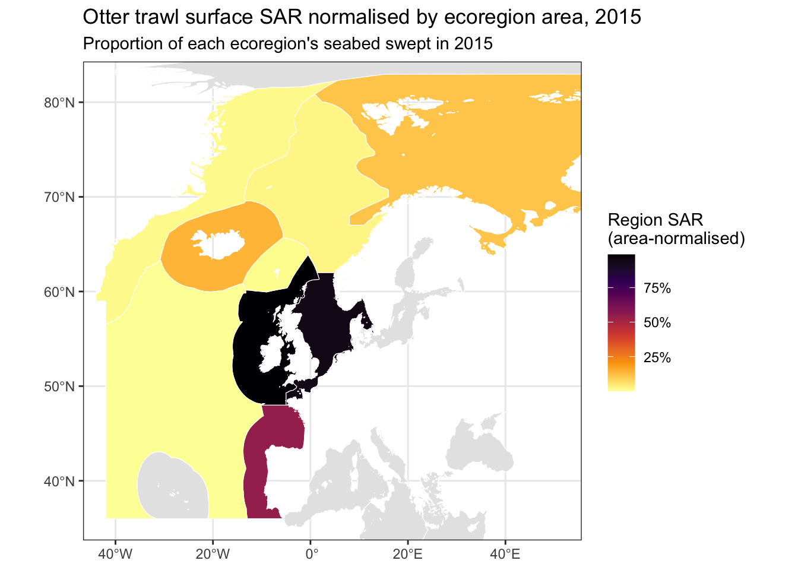
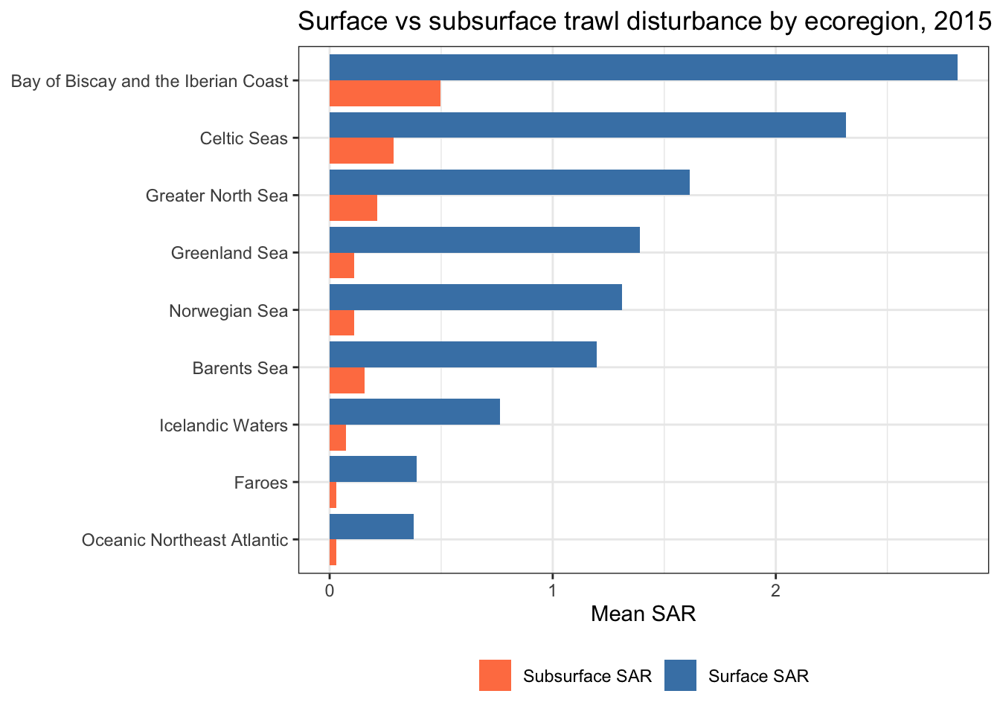

library(tidyverse)
library(sf)
library(rnaturalearth)
library(rnaturalearthdata)
library(patchwork)OSPAR Otter Trawl Fishing Intensity (2015)
Background
The OSPAR Commission coordinates data collection on fishing intensity across the Northeast Atlantic under the Joint Assessment and Monitoring Programme (JAMP). The dataset used here — OSPAR Otter Trawl Bottom Fishing Intensity 2015 — is a gridded product derived from Vessel Monitoring System (VMS) and logbook data submitted through the ICES VMS Data Call. Several participants on this course contribute to that data call directly.
Each grid cell follows the C-square coding system: a hierarchical spatial reference that encodes location and resolution in a single string ("1400:390:130:1"). At the resolution used here, cells are approximately 0.05° × 0.05°. The dataset covers the full OSPAR maritime area (Northeast Atlantic, 36–82°N) with 91,190 cells.
Key variables
| Variable | Description |
|---|---|
SurfSAR |
Surface Swept Area Ratio — total trawled area ÷ cell area |
SubsurfSAR |
Subsurface (penetrating) Swept Area Ratio |
FishingH |
Total fishing hours in the cell |
KWfishingH |
kW-fishing hours (effort weighted by vessel power) |
totweight |
Total catch weight (kg) |
totvalue |
Total catch value (€) — 41% missing |
mid_lon, mid_lat |
Cell centroid coordinates |
A value of −9 is used throughout as a missing data sentinel and must be recoded to NA before any analysis.
Getting started
Libraries
Data
# OSPAR intensity grid — replace the -9 sentinel with NA
ospar <- read_sf("data/OSPAR_intensity_Otter_2015.gpkg") |>
mutate(across(SubsurfSAR:FishingH, \(x) if_else(x == -9, NA_real_, x)))
# ICES ecoregions — st_make_valid() needed for a geometry issue (see §4)
ices_er <- read_sf("data/ices_ecoregions.gpkg") |>
select(ecoregion) |>
st_make_valid()
# Land background
land <- ne_countries(scale = "medium", returnclass = "sf")Data quality
The −9 sentinel is not applied uniformly across variables:
ospar |>
st_drop_geometry() |>
summarise(across(SubsurfSAR:FishingH,
\(x) scales::percent(mean(is.na(x)), accuracy = 0.1))) |>
pivot_longer(everything(), names_to = "variable", values_to = "pct_missing")# A tibble: 7 × 2
variable pct_missing
<chr> <chr>
1 SubsurfSAR 2.7%
2 SurfSAR 2.7%
3 SurfSA 2.7%
4 totweight 2.7%
5 totvalue 41.1%
6 KWfishingH 2.7%
7 FishingH 2.7% totvalue has ~41% missing values and should be used cautiously. All other variables are ~2.7% missing — consistent with cells where the gear type or data quality flag prevented reporting.
Mapping fishing intensity
Performance note
The OSPAR dataset is provided as 91,190 polygons. Plotting them with geom_sf() renders every polygon outline and is slow (10–30 seconds on most machines). A much faster approach is to use the pre-computed centroid columns mid_lon and mid_lat with geom_tile(), treating the dataset as a raster grid. We keep the polygon geometry only for spatial operations (§4).
# Data frame version — no geometry, fast to plot
ospar_df <- ospar |> st_drop_geometry()Surface swept area ratio (SurfSAR)
SAR is the standard OSPAR metric for trawling disturbance: values > 1 mean the seabed was trawled more than once during the year. A log(1 + x) scale is appropriate given the strongly right-skewed distribution.
ospar_df |>
filter(!is.na(SurfSAR)) |>
ggplot() +
geom_tile(aes(x = mid_lon, y = mid_lat, fill = SurfSAR)) +
geom_sf(data = land, fill = "grey75", colour = "white", linewidth = 0.2,
inherit.aes = FALSE) +
scale_fill_viridis_c(option = "inferno", direction = -1,
transform = "log1p",
name = "Surface SAR\n(log scale)") +
coord_sf(xlim = c(-42, 51), ylim = c(36, 82)) +
labs(x = NULL, y = NULL,
title = "OSPAR otter trawl surface swept area ratio, 2015") +
theme_bw()
Surface vs subsurface SAR
Subsurface SAR measures gear penetration into the sediment — ecologically important for benthic habitat disturbance assessment. Comparing the two reveals where demersal trawling causes deeper seabed impact.
make_sar_map <- function(data, var, title) {
data |>
filter(!is.na(.data[[var]])) |>
ggplot() +
geom_tile(aes(x = mid_lon, y = mid_lat, fill = .data[[var]])) +
geom_sf(data = land, fill = "grey75", colour = "white", linewidth = 0.2,
inherit.aes = FALSE) +
scale_fill_viridis_c(option = "inferno", direction = -1,
transform = "log1p", name = "SAR\n(log scale)") +
coord_sf(xlim = c(-15, 15), ylim = c(47, 62)) + # North Sea / Celtic Seas
labs(x = NULL, y = NULL, title = title) +
theme_bw() +
theme(legend.position = "bottom")
}
make_sar_map(ospar_df, "SurfSAR", "Surface SAR") +
make_sar_map(ospar_df, "SubsurfSAR", "Subsurface SAR")
Fishing hours and effort
FishingH and KWfishingH are effort metrics. The kW-weighted version up-weights larger vessels and is a better proxy for fishing capacity. Plotting both side-by-side highlights where small versus large vessels dominate:
p_hours <- ospar_df |>
filter(!is.na(FishingH)) |>
ggplot() +
geom_tile(aes(x = mid_lon, y = mid_lat, fill = FishingH)) +
geom_sf(data = land, fill = "grey75", colour = "white", linewidth = 0.2,
inherit.aes = FALSE) +
scale_fill_viridis_c(option = "mako", direction = -1,
transform = "log1p", name = "Hours\n(log)") +
coord_sf(xlim = c(-15, 15), ylim = c(47, 62)) +
labs(x = NULL, y = NULL, title = "Fishing hours") +
theme_bw() + theme(legend.position = "bottom")
p_kw <- ospar_df |>
filter(!is.na(KWfishingH)) |>
ggplot() +
geom_tile(aes(x = mid_lon, y = mid_lat, fill = KWfishingH)) +
geom_sf(data = land, fill = "grey75", colour = "white", linewidth = 0.2,
inherit.aes = FALSE) +
scale_fill_viridis_c(option = "mako", direction = -1,
transform = "log1p", name = "kW·h\n(log)") +
coord_sf(xlim = c(-15, 15), ylim = c(47, 62)) +
labs(x = NULL, y = NULL, title = "kW-fishing hours") +
theme_bw() + theme(legend.position = "bottom")
p_hours + p_kw
Aggregation by ICES ecoregion
Spatial joining 91,190 grid cells against polygon boundaries is the key operation here. The ICES ecoregion polygons contain a minor geometry validity issue that triggers an S2 error. st_make_valid() resolves it cleanly and was already applied when loading the data above.
# The join takes ~2–3 seconds on a typical laptop.
# sf_use_s2(FALSE) is required: the ICES ecoregion polygons have a topology
# that S2 spherical geometry does not accept (even after st_make_valid()).
sf_use_s2(FALSE)
by_region <- ospar |>
st_join(ices_er) |>
st_drop_geometry() |>
filter(!is.na(ecoregion)) |>
group_by(ecoregion) |>
summarise(
total_FishingH = sum(FishingH, na.rm = TRUE),
mean_SurfSAR = mean(SurfSAR, na.rm = TRUE),
mean_SubsurfSAR = mean(SubsurfSAR, na.rm = TRUE),
total_SurfSA_km2 = sum(SurfSA, na.rm = TRUE),
total_weight_kt = sum(totweight, na.rm = TRUE) / 1e6,
.groups = "drop"
) |>
arrange(desc(total_FishingH))
sf_use_s2(TRUE)
by_region# A tibble: 9 × 6
ecoregion total_FishingH mean_SurfSAR mean_SubsurfSAR total_SurfSA_km2
<chr> <dbl> <dbl> <dbl> <dbl>
1 Celtic Seas 1405642. 2.31 0.288 903746.
2 Greater North Sea 1077439. 1.61 0.214 633723.
3 Bay of Biscay an… 742268. 2.82 0.498 410212.
4 Icelandic Waters 184916. 0.765 0.0747 104925.
5 Barents Sea 125505. 1.20 0.155 236755.
6 Norwegian Sea 12652. 1.31 0.110 27462.
7 Greenland Sea 8609. 1.39 0.109 14930.
8 Oceanic Northeas… 6962. 0.377 0.0294 7047.
9 Faroes 2233. 0.390 0.0311 2636.
# ℹ 1 more variable: total_weight_kt <dbl>Bar chart — total fishing hours by ecoregion
by_region |>
mutate(ecoregion = fct_reorder(ecoregion, total_FishingH)) |>
ggplot(aes(x = total_FishingH / 1000, y = ecoregion)) +
geom_col(fill = "steelblue") +
labs(x = "Total fishing hours (thousands)", y = NULL,
title = "OSPAR otter trawl effort by ICES ecoregion, 2015") +
theme_bw()
Choropleth — mean SurfSAR per ecoregion
Joining the aggregated table back to the ecoregion polygons gives a choropleth. mean_SurfSAR is the average SAR over cells that were actually trawled, so it measures intensity where fishing occurred — not what fraction of the ecoregion was affected.
ices_er_summary <- ices_er |>
left_join(by_region, by = "ecoregion")
ggplot() +
geom_sf(data = ices_er_summary, aes(fill = mean_SurfSAR), colour = "white") +
scale_fill_viridis_c(option = "inferno", direction = -1,
name = "Mean\nSurface SAR",
na.value = "grey90") +
coord_sf(xlim = c(-42, 51), ylim = c(36, 82)) +
labs(x = NULL, y = NULL,
title = "Mean otter trawl surface SAR by ICES ecoregion, 2015",
subtitle = "Average over trawled cells only") +
theme_bw()
Area-normalised SAR per ecoregion
mean_SurfSAR can be misleading: a region where fishing is extremely intense in a small corner will look similar to one where the same intensity is spread across the whole area. A more complete picture requires normalising by the total ecoregion area rather than the number of trawled cells.
The region-wide SAR is:
\[\text{region SAR} = \frac{\sum \text{SurfSA (km}^2\text{)}}{\text{ecoregion area (km}^2\text{)}}\]
where SurfSA is the actual swept area (km²) per cell. Ecoregion areas are computed from the polygon geometries using st_area() — the area_km2 column stored in the file is inconsistent with the geometries and should not be used.
# Ecoregion areas from geometry (authoritative).
# The area_km2 column stored in the file is inconsistent with the polygon
# geometries and should not be used.
ecoregion_areas <- ices_er |>
mutate(area_km2 = as.numeric(st_area(geom)) / 1e6) |>
st_drop_geometry() |>
select(ecoregion, area_km2)
# by_region already contains total_SurfSA_km2 from the join above
region_sar <- by_region |>
left_join(ecoregion_areas, by = "ecoregion") |>
mutate(region_SAR = total_SurfSA_km2 / area_km2) |>
arrange(desc(region_SAR))
region_sar |> select(ecoregion, mean_SurfSAR, total_SurfSA_km2, area_km2, region_SAR)# A tibble: 9 × 5
ecoregion mean_SurfSAR total_SurfSA_km2 area_km2 region_SAR
<chr> <dbl> <dbl> <dbl> <dbl>
1 Celtic Seas 2.31 903746. 913791. 0.989
2 Greater North Sea 1.61 633723. 667869. 0.949
3 Bay of Biscay and the Iberi… 2.82 410212. 754408. 0.544
4 Icelandic Waters 0.765 104925. 751577. 0.140
5 Barents Sea 1.20 236755. 2111246. 0.112
6 Norwegian Sea 1.31 27462. 1197961. 0.0229
7 Greenland Sea 1.39 14930. 1058117. 0.0141
8 Faroes 0.390 2636. 265603. 0.00992
9 Oceanic Northeast Atlantic 0.377 7047. 4802806. 0.00147The contrast between the two metrics is stark:
region_sar |>
select(ecoregion, mean_SurfSAR, region_SAR) |>
pivot_longer(cols = c(mean_SurfSAR, region_SAR),
names_to = "metric", values_to = "value") |>
mutate(
ecoregion = fct_reorder(ecoregion, value, .fun = max),
metric = recode(metric,
mean_SurfSAR = "Mean SAR (trawled cells)",
region_SAR = "Region SAR (whole ecoregion)")
) |>
ggplot(aes(x = value, y = ecoregion, colour = metric, shape = metric)) +
geom_point(size = 3) +
scale_colour_manual(values = c("Mean SAR (trawled cells)" = "coral",
"Region SAR (whole ecoregion)" = "steelblue"),
name = NULL) +
scale_shape_manual(values = c("Mean SAR (trawled cells)" = 16,
"Region SAR (whole ecoregion)" = 17),
name = NULL) +
labs(x = "SAR", y = NULL,
title = "Trawl intensity vs areal coverage by ecoregion",
subtitle = "Gap between metrics indicates spatially concentrated fishing") +
theme_bw() +
theme(legend.position = "bottom")
The gap between the two metrics is informative. The Bay of Biscay has the highest mean SAR per trawled cell (2.8 — each cell is swept nearly three times on average) yet covers only 54% of the ecoregion area, indicating highly concentrated fishing. The Celtic Seas and Greater North Sea have a smaller gap: nearly the entire area (99% and 95% respectively) was swept at least once in 2015, making them the most extensively impacted ecoregions regardless of metric.
ices_er_sar <- ices_er |>
left_join(region_sar, by = "ecoregion")
ggplot() +
geom_sf(data = ices_er_sar, aes(fill = region_SAR), colour = "white") +
scale_fill_viridis_c(option = "inferno", direction = -1,
name = "Region SAR\n(area-normalised)",
na.value = "grey90",
labels = scales::percent_format(accuracy = 1)) +
coord_sf(xlim = c(-42, 51), ylim = c(36, 82)) +
labs(x = NULL, y = NULL,
title = "Otter trawl surface SAR normalised by ecoregion area, 2015",
subtitle = "Proportion of each ecoregion's seabed swept in 2015") +
theme_bw()
Surface vs subsurface disturbance by ecoregion
by_region |>
select(ecoregion, mean_SurfSAR, mean_SubsurfSAR) |>
pivot_longer(cols = c(mean_SurfSAR, mean_SubsurfSAR),
names_to = "type", values_to = "mean_SAR") |>
mutate(
ecoregion = fct_reorder(ecoregion, mean_SAR, .fun = max),
type = recode(type,
mean_SurfSAR = "Surface SAR",
mean_SubsurfSAR = "Subsurface SAR")
) |>
ggplot(aes(x = mean_SAR, y = ecoregion, fill = type)) +
geom_col(position = "dodge") +
scale_fill_manual(values = c("Surface SAR" = "steelblue",
"Subsurface SAR" = "coral"),
name = NULL) +
labs(x = "Mean SAR", y = NULL,
title = "Surface vs subsurface trawl disturbance by ecoregion, 2015") +
theme_bw() +
theme(legend.position = "bottom")
Exercises
NoteExercise 1 — Celtic Seas zoom
The Celtic Seas has the highest total fishing hours in the dataset. Filter the OSPAR data to mid_lon between −15 and 0 and mid_lat between 47 and 57, and map SurfSAR at this finer scale. Add iceland_contours.gpkg depth contours as a reference layer. What is the relationship between depth and fishing intensity?
NoteExercise 2 — Catch value vs effort
totvalue is missing for ~41% of cells. Investigate whether the missing values are spatially structured (i.e., concentrated in specific regions) by mapping is.na(totvalue). Then, for cells with non-missing values, plot totvalue against KWfishingH — do high-effort cells always generate high-value catches?
NoteExercise 3 — ORE/MSP overlap (advanced)
ices_ecoregions.gpkg and nephrops_fu.gpkg are both polygon layers that define management boundaries. Use st_intersection() to clip the OSPAR data to a specific Nephrops functional unit of your choice and compute the total fishing effort (FishingH) and mean SAR within it. How might this information be used in an environmental impact assessment for an offshore wind development?